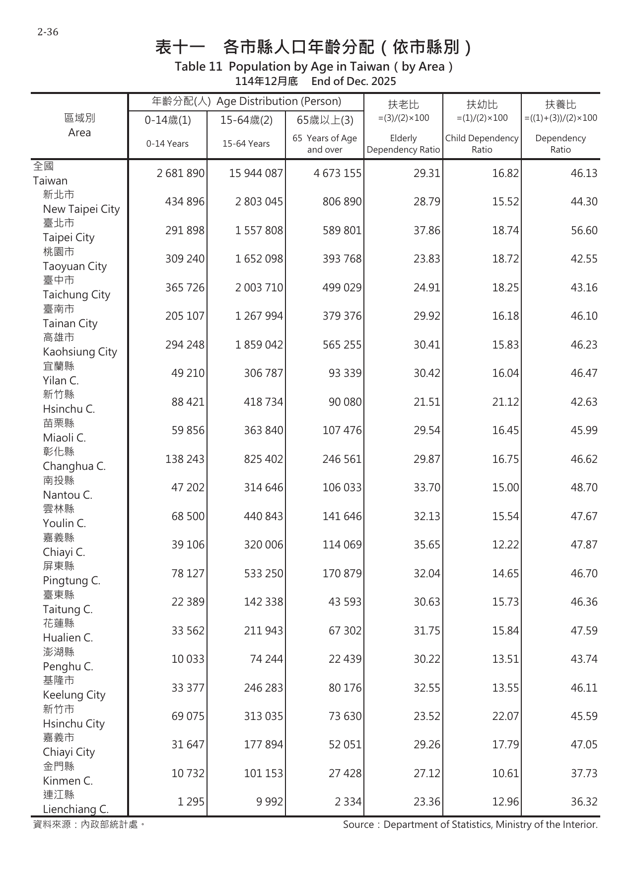

SIDE BY SIDE
在地圖上找一個地方
點選縣市界或下方名稱，更換觀察對象。
斜線區域＝所選數值未公布，不代表零或低風險。小區死亡人數較少，年度波動可能較大；地區比較不能推論個人的疾病風險或因果。
THREE YEARS, TWO PLACES
把差異放進時間裡
A 銅色實線 · B 藍色虛線 · 全國灰線
AGE & MEDICAL RESOURCES
生活環境與照護資源，一起看
醫療資源按院所所在地統計，人口採同年度年底全體戶籍人口。每萬人口數由官方人數／家數除以該縣市人口計算；不代表醫療品質、候診時間或實際就醫可近性，也未扣除跨區就醫。此區固定呈現全體人口，不隨上方性別選單改變。
HOUSEHOLD INCOME / 2025
家庭所得，加入2025年的視角
每戶可支配所得中位數 · 主計總處家庭收支調查
可支配所得＝所得收入總計－非消費支出＝消費＋儲蓄。單位：萬元／戶／年。調查家庭與納稅單位不同，不能與原本稅後所得串成同一條趨勢。調查不含金門、連江，灰色與未納調查均不代表零。
原本稅務所得與資料年份
2025 年綜合所得稅的縣市／區級中位數尚未發布。目前完整核定為2023年，2024年已有初步核定；不把申報或發布年份當成所得年份。本頁新增2025家庭收支調查，2023稅後所得仍保留在CSV與原歷史專區。
INCOME × AIR × HEALTH / 2025
兩種疾病，同一個生活背景
上方A／B、疾病、性別與健康指標會同步套用；點選圓點可更換觀察地區。
所得為抽樣估計，樣本有限；圖中差異不代表統計顯著性或因果，也不適合當成縣市排名。空污為縣市監測統計，非個人暴露。
2025 空氣品質來源與原表
環境部114年空氣品質監測年報，自動監測有效日之算術平均；未扣除境外污染及特殊天氣。不是即時AQI，也不是人口加權或個人暴露。完整官方原始年報 · 環境部來源入口。核對日期：2026-11-22。

2025家庭所得的官方原表與方法
主計總處114年家庭收支調查報告第2表「平均每戶家庭收支按區域別分」的每戶可支配所得中位數。期間為2025年1月1日至12月31日，2026年8月發布，核對2026-11-22。
下載完整官方原始XLS · 下載完整官方原始ODS。調查含20縣市，未含金門與連江。中位數直接取原表，不以縣市或鄉鎮中位數平均回推；原表平均數標準差不當作中位數信賴區間。
22 縣市完整對照數據
指標定義、來源與原始表格
本專區資料核對日期：2026-11-21。健康資料為原死因死亡統計，不是疾病盛行率或就診率。各年度、各性別皆直接採官方原表；未列出的死因保留未列值，沒有以其他性別或全國值回推。
- 年齡標準化死亡率：依 WHO 2000 世界標準人口年齡結構調整，單位為每十萬人口；粗死亡率未調整年齡。死亡人數受地區人口規模影響，不能直接當風險。
- 死亡人數未滿 20 人時，官方將死亡率標記為 *；保留已公布人數，兩種死亡率保持缺值。未進入來源表所列死因者標記為「未列」，不補零。
衛福部 114 年醫療機構現況及醫院醫療服務量統計：表20醫療院所家數、表27醫療院所執業醫事人員數，並以表28每萬人口數核對。完整原始 XLSX · 完整原始 ODS。
高齡人口採內政部統計處資料，收錄於新北市主計處《115年1月重要統計速報》表十一，參考時間為114年12月底。完整政府原始 PDF 第54頁。22縣市人口加總與全國一致，並與衛福部年底人口逐列核對。65歲以上比例＝65歲以上人口／年底總人口 × 100；非扶老比。

醫院與診所包含西醫、中醫與牙醫院所；西醫師數限醫院及診所執業西醫師，不含中醫師、牙醫師及其他非醫療機構人員。每萬人口指標＝相應總數／同年度年底全體戶籍人口 × 10,000。目前呈現縣市總量，未提供個別院所地址點位。
財政部112年度表14-1：申報戶稅後所得 · 下載完整原始 CSV。採各縣市原表中位數，不以區鄉中位數平均。
縣市界沿用主圖譜已核對之內政部國土測繪中心界線，政府資料開放授權條款第1版；離島以獨立框示意，並非同一比例或原地理位置。